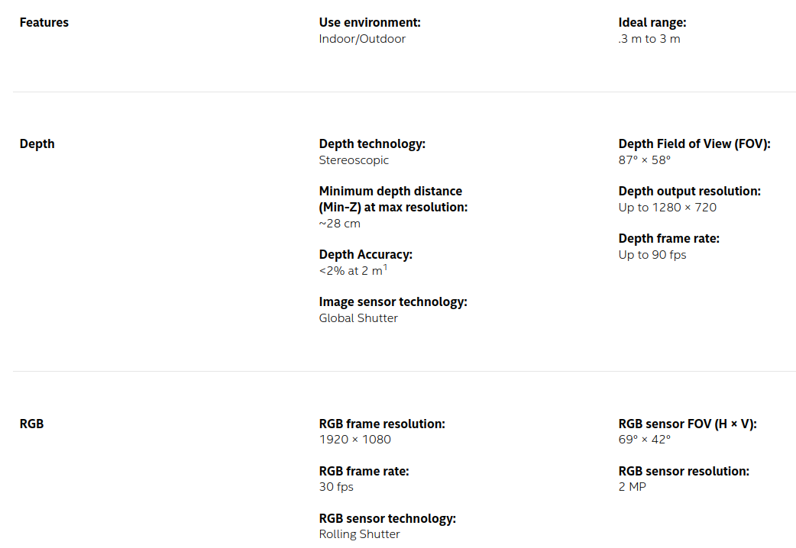
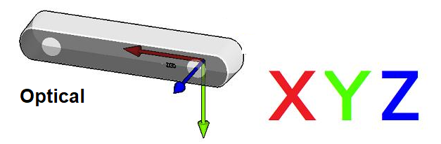
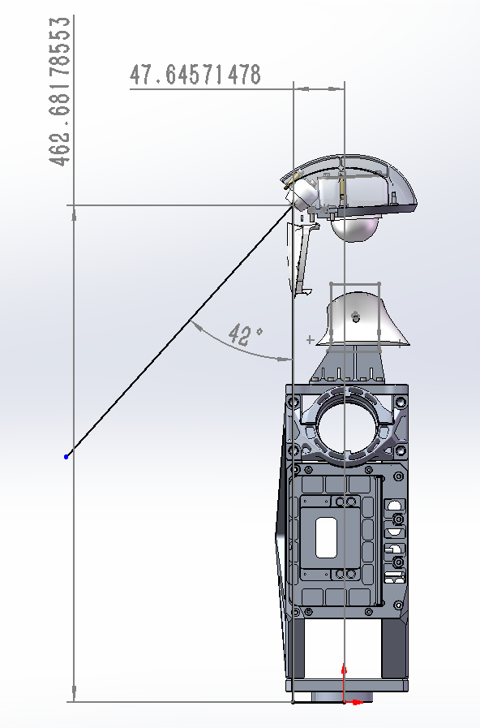
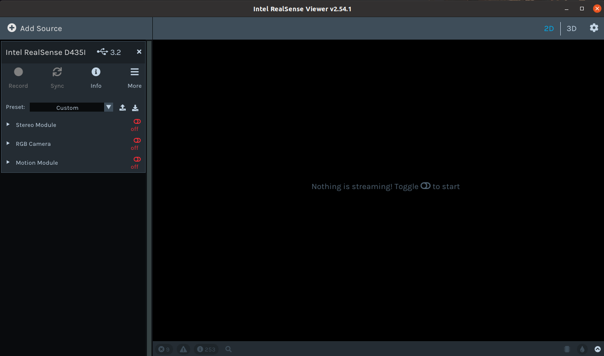
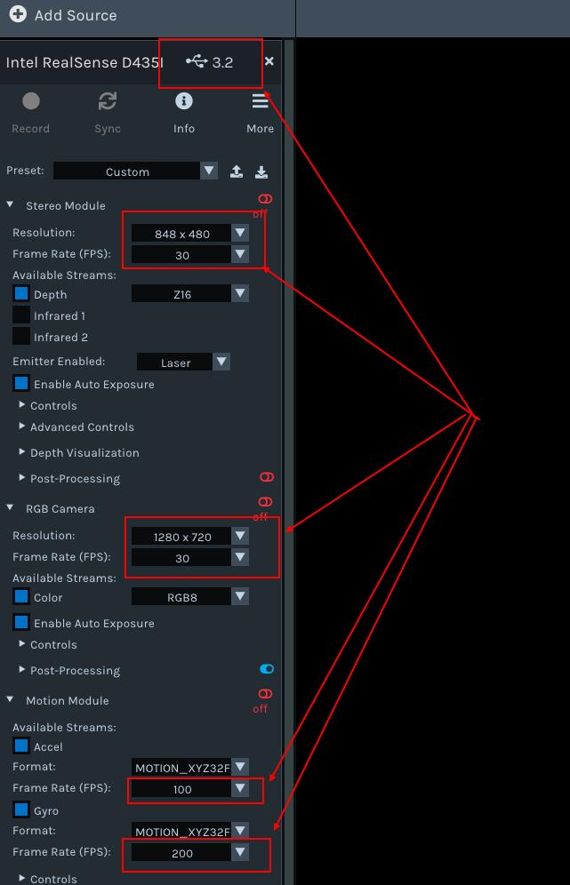
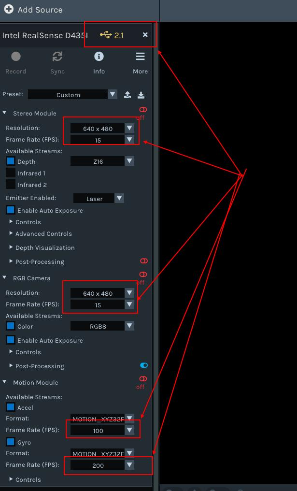

深度相机例程
一、G1机器人深度相机介绍与官方资料获取
G1 机器人深度相机位于机器人头顶位置，型号为 realsense D435i。 相机包含双目红外相机（global shutter）、激光发射器、RGB相机（rolling shutter）、6轴imu。

- 产品主页：https://www.intelrealsense.com/depth-camera-d435/realsense
- 详细文档：https://dev.intelrealsense.com/docs/docs-get-started
- 官方 github 地址：https://github.com/IntelRealSense
深度相机坐标系、深度相机坐标系与机器人中心坐标系关系：


二、数据获取
2.1 通过 RealSense Viewer 上位机查看数据
- windows 端，直接下载
Intel.RealSense.Viewer.exe - 软件，链接：https://github.com/IntelRealSense/librealsense/releases
linux 端，需要编译安装 SDK。 - Ubuntu 18/20/22 LTS 安装参考：https://github.com/IntelRealSense/librealsense/blob/master/doc/installation.md - NVIDIA Jetson 系统安装参考：https://github.com/IntelRealSense/librealsense/blob/master/doc/installation_jetson.md - Raspberry Pi 系统安装参考：https://github.com/IntelRealSense/librealsense/blob/master/doc/RaspberryPi3.md
使用前，需要您在机器人的NX计算机平台上，安装 librealsense。
硬件连接正常的情况下，终端输入 realsense-viewer 打开软件，可以查看到：

2.2 通过 ros 获取数据
相机 ros 驱动代码仓库：https://github.com/IntelRealSense/realsense-ros 详细使用说明参考代码仓库的 readme 文件。 平时使用，建议直接通过 sdk 获取数据并处理。
2.3 通过 SDK 获取数据
相机 SDK 代码仓库：https://github.com/IntelRealSense/librealsense
SDK 的使用可以参考../librealsense-2.54.1/examples 下的代码内容。
参考 demo：
/**
* @file test.cpp
* get_camera_imu_stream_test
*
*/
#include <librealsense2/rs.hpp>
#include <librealsense2/hpp/rs_internal.hpp>
#include <unistd.h>
#include <iostream>
#include <mutex>
#include <thread>
#include <opencv2/core.hpp>
#include <opencv2/imgproc.hpp>
#include <opencv2/imgcodecs.hpp>
#include <opencv2/highgui.hpp>
std::mutex mutex;
rs2::frameset fs_frame = {};
double fs_timestamp = 0.0;
bool fs_flag = false;
void stream_callback(const rs2::frame& frame){
static double fs_last_timestamp = 0.0;
static double gyro_last_timestamp = 0.0;
static double accel_last_timestamp = 0.0;
if(rs2::frameset c_frame = frame.as<rs2::frameset>()){
// do not use
// // double f_timestamp = c_frame.get_timestamp()*1e-3;
// // printf("frame f_timestamp: %.4f \n", f_timestamp);
double clc_timestamp;{
struct timespec time = {0};
clock_gettime(CLOCK_REALTIME, &time);
clc_timestamp = time.tv_sec + time.tv_nsec*1e-9;
}
std::unique_lock<std::mutex> lock(mutex);
fs_frame = c_frame;
fs_timestamp = clc_timestamp;
fs_flag = true;
lock.unlock();
// printf("frame clc_timestamp: %.4f \n", clc_timestamp);
// printf("frame fps: %.4f \n", 1/(clc_timestamp - fs_last_timestamp));
fs_last_timestamp = clc_timestamp;
}else if(rs2::motion_frame m_frame = frame.as<rs2::motion_frame>()){
if (m_frame.get_profile().stream_name() == "Gyro"){
double clc_timestamp;{
struct timespec time = {0};
clock_gettime(CLOCK_REALTIME, &time);
clc_timestamp = time.tv_sec + time.tv_nsec*1e-9;
}
// Get gyro measures
rs2_vector gyro_data = m_frame.get_motion_data();
// std::cout << "gyro_data" << gyro_data << std::endl;
// printf("gyro clc_timestamp: %.4f \n", clc_timestamp);
// printf("gyro fps: %.4f \n", 1/(clc_timestamp - gyro_last_timestamp));
gyro_last_timestamp = clc_timestamp;
}else if (m_frame.get_profile().stream_name() == "Accel"){
double clc_timestamp;{
struct timespec time = {0};
clock_gettime(CLOCK_REALTIME, &time);
clc_timestamp = time.tv_sec + time.tv_nsec*1e-9;
}
// Get accelerometer measures
rs2_vector accel_data = m_frame.as<rs2::motion_frame>().get_motion_data();
// std::cout << "accel_data" << accel_data << std::endl;
// printf("accel clc_timestamp: %.4f \n", clc_timestamp);
// printf("accel fps: %.4f \n", 1/(clc_timestamp - accel_last_timestamp));
accel_last_timestamp = clc_timestamp;
}
}
}
rs2::device get_a_realsense_device()
{
// Instantiate context
rs2::context ctx;
// The query_device method of the context retrieves a list of devices and returns a Device_List object
rs2::device_list devices = ctx.query_devices();
// Instantiate device
rs2::device selected_device;
if (devices.size() == 0){
std::cerr << "No device connected!!!!!" << std::endl;
exit(0);
}
// Printing device information
std::cout <<"get device num: "<<devices.size()<<std::endl;
for (int i = 0; i < devices.size(); i++){
std::vector<rs2::sensor> sensors = devices[i].query_sensors();
std::string serial = devices[i].get_info(RS2_CAMERA_INFO_SERIAL_NUMBER);
std::string port = devices[i].get_info(RS2_CAMERA_INFO_PHYSICAL_PORT);
std::cout << "get serial " << i << " : " << serial << std::endl;
std::cout << "get port " << i << " : " << port << std::endl;
}
// Passing the first device to the selected_device obtained by device instantiation
selected_device = devices[0];
// At this point, selected_device represents our current device and returns it
return selected_device;
}
void get_sensor_option(const rs2::sensor& sensor)
{
std::cout << "Sensor name: " << "<" << sensor.get_info(RS2_CAMERA_INFO_NAME) << ">" <<std::endl;
std::cout << "This sensor supports the following options:\n" << std::endl;
// Cycle all parameters
for (int i = 0; i < static_cast<int>(RS2_OPTION_COUNT); i++)
{
rs2_option option_type = static_cast<rs2_option>(i);
// Firstly, determine whether the sensor supports this option setting
if (sensor.supports(option_type))
{
// Retrieve and print a description of the current option
const char* description = sensor.get_option_description(option_type);
// Retrieve the value of the current option
float current_value = sensor.get_option(option_type);
// Get the value range, default value, and value step size of the option
rs2::option_range range = sensor.get_option_range(option_type);
float default_value = range.def;
float maximum_supported_value = range.max;
float minimum_supported_value = range.min;
float difference_to_next_value = range.step;
// print
std::cout << " " << i << ": " << "<" << option_type << ">" << std::endl;
std::cout << " Description : " << description << std::endl;
std::cout << " Min Value : " << minimum_supported_value << std::endl;
std::cout << " Max Value : " << maximum_supported_value << std::endl;
std::cout << " Step : " << difference_to_next_value << std::endl;
std::cout << " Default Value : " << default_value << std::endl;
std::cout << " Current Value : " << current_value << std::endl;
std::cout << std::endl;
}
else
{
//std::cout << " is not supported by this sensor" << std::endl;
}
}
std::cout << std::endl;
std::cout << std::endl;
}
void change_sensor_option(const rs2::sensor& sensor, rs2_option option_type, float requested_value)
{
// Firstly, determine whether the sensor supports this option setting
if (!sensor.supports(option_type))
{
std::cout << "option is not supported by sensor " << "<" << sensor.get_info(RS2_CAMERA_INFO_NAME) << ">" << std::endl;
return;
}
else
{
// Use the set_option function to assign new values to options
sensor.set_option(option_type, requested_value);
std::cout << "<" << sensor.get_info(RS2_CAMERA_INFO_NAME) << "> " << "change " << "<" << option_type << ">" << " to " << ": " << requested_value << std::endl;
}
}
void l_get_intrinsics(const rs2::stream_profile& stream, float &_fx, float &_fy, float &_cx, float &_cy)
{
// A sensor's stream (rs2::stream_profile) is in general a stream of data with no specific type.
// For video streams (streams of images), the sensor that produces the data has a lens and thus has properties such
// as a focal point, distortion, and principal point.
// To get these intrinsics parameters, we need to take a stream and first check if it is a video stream
if (rs2::video_stream_profile video_stream = stream.as<rs2::video_stream_profile>())
{
try
{
// Using the get_intriniscs method to obtain camera intrinsic parameters
rs2_intrinsics intrinsics = video_stream.get_intrinsics();
// Process some results
auto principal_point = std::make_pair(intrinsics.ppx, intrinsics.ppy);
auto focal_length = std::make_pair(intrinsics.fx, intrinsics.fy);
rs2_distortion model = intrinsics.model;
// 打印内参
/*std::cout << "width*height : " << intrinsics.width << " * " << intrinsics.height << std::endl;
std::cout << "Principal Point : " << principal_point.first << ", " << principal_point.second << std::endl;
std::cout << "Focal Length : " << focal_length.first << ", " << focal_length.second << std::endl;
std::cout << "Distortion Model : " << model << std::endl;
std::cout << "Distortion Coefficients : [" << intrinsics.coeffs[0] << "," << intrinsics.coeffs[1] << "," <<
intrinsics.coeffs[2] << "," << intrinsics.coeffs[3] << "," << intrinsics.coeffs[4] << "]" << std::endl;*/
std::cout << "\n\n--------------- intrinsics ---------------" << std::endl;
std::cout << "width*height : " << intrinsics.width << " * " << intrinsics.height << std::endl;
std::cout << "Camera.fx: " << focal_length.first << std::endl;
std::cout << "Camera.fy: " << focal_length.second << std::endl;
std::cout << "Camera.cx: " << principal_point.first << std::endl;
std::cout << "Camera.cy: " << principal_point.second << std::endl;
std::cout << "--------------- ---------------\n\n" << std::endl;
_fx = focal_length.first; // 前相机内参
_fy = focal_length.second;
_cx = principal_point.first;
_cy = principal_point.second;
}
catch (const std::exception &e)
{
std::cout << "Failed to get intrinsics for the given stream. " << e.what() << std::endl;
}
}
}
int main()
{
rs2::device selected_device;
selected_device = get_a_realsense_device();
std::vector<rs2::sensor> sensors = selected_device.query_sensors();
// Print sensor parameters
for (rs2::sensor sensor : sensors){
get_sensor_option(sensor);
}
// Set sensor parameters
for (rs2::sensor sensor : sensors){
std::string sensor_name = sensor.get_info(RS2_CAMERA_INFO_NAME);
if(sensor_name == "Stereo Module"){ // Depth camera
change_sensor_option(sensor, RS2_OPTION_VISUAL_PRESET, rs2_rs400_visual_preset::RS2_RS400_VISUAL_PRESET_HIGH_ACCURACY);
change_sensor_option(sensor, RS2_OPTION_ENABLE_AUTO_EXPOSURE, 1);
change_sensor_option(sensor, RS2_OPTION_EMITTER_ENABLED, 1);
change_sensor_option(sensor, RS2_OPTION_LASER_POWER, 150);
}else if(sensor_name == "RGB Module"){
change_sensor_option(sensor, RS2_OPTION_ENABLE_AUTO_EXPOSURE, 1);
}else if(sensor_name == "Motion Module"){
// ...
}
}
// Instantiate pipeline and config
rs2::pipeline pipe;
rs2::config cfg;
// Depth stream
cfg.enable_stream(RS2_STREAM_DEPTH, 640, 480, RS2_FORMAT_Z16, 60);
// IR_left stream
cfg.enable_stream(RS2_STREAM_INFRARED, 1, 640, 480, RS2_FORMAT_Y8, 60);
// IR_right stream
cfg.enable_stream(RS2_STREAM_INFRARED, 2, 640, 480, RS2_FORMAT_Y8, 60);
// RGB stream
cfg.enable_stream(RS2_STREAM_COLOR, 848, 480, RS2_FORMAT_BGR8, 60);
// IMU GYRO stream
cfg.enable_stream(RS2_STREAM_GYRO , RS2_FORMAT_MOTION_XYZ32F, 400);
// IMU ACCEL stream
cfg.enable_stream(RS2_STREAM_ACCEL, RS2_FORMAT_MOTION_XYZ32F, 200);
rs2::pipeline_profile pipe_profile = pipe.start(cfg, stream_callback);
// get Depth(IR_left) intrinsics
float mCamera_fx, mCamera_fy, mCamera_cx, mCamera_cy;
l_get_intrinsics(pipe_profile.get_stream(RS2_STREAM_DEPTH), mCamera_fx, mCamera_fy, mCamera_cx, mCamera_cy);
// post process
rs2::temporal_filter temp_filter;
temp_filter.set_option(rs2_option::RS2_OPTION_HOLES_FILL, 6);
temp_filter.set_option(rs2_option::RS2_OPTION_FILTER_SMOOTH_ALPHA, 0.4f);
temp_filter.set_option(rs2_option::RS2_OPTION_FILTER_SMOOTH_DELTA, 20);
double _timestamp_last = 0.0;
while (true){
rs2::frameset _frame = {};
double _timestamp = 0.0;
bool _flag = false;
std::unique_lock<std::mutex> lock(mutex);
_frame = fs_frame;
_timestamp = fs_timestamp;
_flag = fs_flag;
fs_flag = false;
lock.unlock();
if(_flag){
printf("_frame fps: %.4f \n", 1/(_timestamp - _timestamp_last));
// Obtain data for each image
rs2::depth_frame depth_frame = _frame.get_depth_frame();
rs2::video_frame color_frame = _frame.get_color_frame();
rs2::frame irL_frame = _frame.get_infrared_frame(1);
rs2::frame irR_frame = _frame.get_infrared_frame(2);
rs2::depth_frame depth_frame_filtered = temp_filter.process(depth_frame);
// Convert image data to OpenCV format
cv::Mat depth_image(cv::Size(640, 480), CV_16U , (void*)depth_frame.get_data(), cv::Mat::AUTO_STEP); // Depth
cv::Mat color_image(cv::Size(848, 480), CV_8UC3, (void*)color_frame.get_data(), cv::Mat::AUTO_STEP); // RGB
cv::Mat irL_image (cv::Size(640, 480), CV_8UC1, (void*)irL_frame.get_data() , cv::Mat::AUTO_STEP); // IR_left
cv::Mat irR_image (cv::Size(640, 480), CV_8UC1, (void*)irR_frame.get_data() , cv::Mat::AUTO_STEP); // IR_right
cv::Mat p_depth_image(cv::Size(640, 480), CV_16U , (void*)depth_frame.get_data(), cv::Mat::AUTO_STEP); // post processed Depth
// show pictures
if (color_image.empty() || depth_image.empty() || irL_image.empty() || irR_image.empty()) {
std::cerr << "One or more images are empty." << std::endl;
continue;
}
cv::imshow("depth", depth_image);
cv::imshow("color", color_image);
cv::imshow("irL", irL_image);
cv::imshow("irR", irR_image);
cv::imshow("p_depth", depth_image);
cv::waitKey(1);
_timestamp_last = _timestamp;
}else{
usleep(2000);
}
}
return 0;
}
cmake_minimum_required(VERSION 3.1.0)
project(get_camera_imu_stream_test)
set(CMAKE_BUILD_TYPE Release)
set(CMAKE_CXX_FLAGS_RELEASE "-O3 -w")
set(CMAKE_C_FLAGS_RELEASE "-O3 -w")
# Find librealsense2 installed package
find_package(realsense2 REQUIRED)
find_package(OpenCV REQUIRED)
# Enable C++11
set(CMAKE_CXX_STANDARD 11)
set(CMAKE_CXX_STANDARD_REQUIRED TRUE)
# Add the application sources to the target
add_executable(${PROJECT_NAME} test.cpp)
# Link librealsense2 to the target
target_link_libraries(${PROJECT_NAME} ${realsense2_LIBRARY} ${OpenCV_LIBS})
2.4 关于realsense深度相机的usb2.0、usb3.0连接问题
在深度相机连接到usb3.0的情况下， realsense-viewer 软件内可以看到其支持的分辨率和帧率：

在深度相机连接到usb2.0的情况下，需要通过hub转接才能正常使用SDK获取数据。G1的NX处理器上也可以直接使用。usb2.0连接下，能获得的帧率和分辨率与usb3.0连接下会有所不同，realsense-viewer 软件内可以看到其支持的分辨率和帧率：
